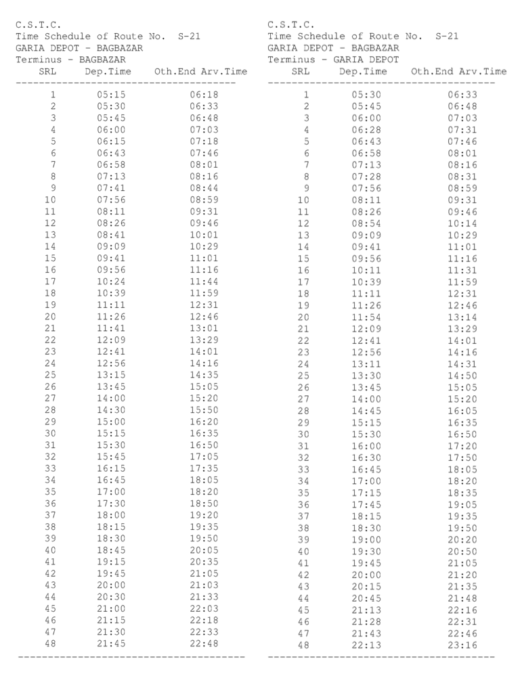

S-21 Kolkata City Bus Timetable
GARIA DEPOT → BAGBAZAR and reverse direction departure and terminal arrival times.
Departures 94First 5:15 AMLast 10:13 PMDirections 2
GARIA DEPOT BAGBAZAR
| # | Departure | Arrival | Ride |
|---|---|---|---|
| 1 | 5:15 AM | 6:18 AM | 1h 03m |
| 2 | 5:30 AM | 6:33 AM | 1h 03m |
| 3 | 5:45 AM | 6:48 AM | 1h 03m |
| 4 | 6:00 AM | 7:03 AM | 1h 03m |
| 5 | 6:15 AM | 7:18 AM | 1h 03m |
| 6 | 6:43 AM | 7:46 AM | 1h 03m |
| 7 | 6:58 AM | 8:01 AM | 1h 03m |
| 8 | 7:13 AM | 8:16 AM | 1h 03m |
| 9 | 7:41 AM | 8:44 AM | 1h 03m |
| 10 | 7:56 AM | 8:59 AM | 1h 03m |
| 11 | 8:11 AM | 9:31 AM | 1h 20m |
| 12 | 8:26 AM | 9:46 AM | 1h 20m |
| 13 | 8:41 AM | 10:01 AM | 1h 20m |
| 14 | 9:09 AM | 10:29 AM | 1h 20m |
| 15 | 9:41 AM | 11:01 AM | 1h 20m |
| 16 | 9:56 AM | 11:16 AM | 1h 20m |
| 17 | 10:24 AM | 11:44 AM | 1h 20m |
| 18 | 10:39 AM | 11:59 AM | 1h 20m |
| 19 | 11:21 AM | 12:31 PM | 1h 10m |
| 20 | 11:41 AM | 12:46 PM | 1h 05m |
| 21 | 12:09 PM | 1:01 PM | 52m |
| 22 | 12:41 PM | 1:29 PM | 48m |
| 23 | 12:56 PM | 2:01 PM | 1h 05m |
| 24 | 1:15 PM | 2:16 PM | 1h 01m |
| 25 | 1:45 PM | 2:35 PM | 50m |
| 26 | 2:00 PM | 3:05 PM | 1h 05m |
| 27 | 2:30 PM | 3:20 PM | 50m |
| 28 | 3:00 PM | 3:50 PM | 50m |
| 29 | 3:15 PM | 4:20 PM | 1h 05m |
| 30 | 3:30 PM | 4:35 PM | 1h 05m |
| 31 | 3:45 PM | 4:50 PM | 1h 05m |
| 32 | 4:15 PM | 5:05 PM | 50m |
| 33 | 4:45 PM | 5:35 PM | 50m |
| 34 | 5:00 PM | 6:05 PM | 1h 05m |
| 35 | 5:30 PM | 6:20 PM | 50m |
| 36 | 6:00 PM | 6:50 PM | 50m |
| 37 | 6:15 PM | 7:20 PM | 1h 05m |
| 38 | 6:30 PM | 7:35 PM | 1h 05m |
| 39 | 6:45 PM | 7:50 PM | 1h 05m |
| 40 | 7:15 PM | 8:05 PM | 50m |
| 41 | 7:45 PM | 8:35 PM | 50m |
| 42 | 8:00 PM | 9:05 PM | 1h 05m |
| 43 | 8:30 PM | 9:33 PM | 1h 03m |
| 44 | 9:00 PM | 10:03 PM | 1h 03m |
| 45 | 9:15 PM | 10:18 PM | 1h 03m |
| 46 | 9:30 PM | 10:33 PM | 1h 03m |
| 47 | 9:45 PM | 10:48 PM | 1h 03m |
Via / stoppages11 listed
- Bagbazar
- Shyambazar
- Khanna
- HUDCO
- EM bypass
- Ruby
- Kalikapur
- Ajoynagar
- Pearless Hospital
- Patuli P.S
- Garia
BAGBAZAR GARIA DEPOT
| # | Departure | Arrival | Ride |
|---|---|---|---|
| 1 | 5:30 AM | 6:33 AM | 1h 03m |
| 2 | 5:45 AM | 6:48 AM | 1h 03m |
| 3 | 6:00 AM | 7:03 AM | 1h 03m |
| 4 | 6:28 AM | 7:31 AM | 1h 03m |
| 5 | 6:43 AM | 7:46 AM | 1h 03m |
| 6 | 6:58 AM | 8:01 AM | 1h 03m |
| 7 | 7:13 AM | 8:16 AM | 1h 03m |
| 8 | 7:28 AM | 8:31 AM | 1h 03m |
| 9 | 7:56 AM | 8:59 AM | 1h 03m |
| 10 | 8:11 AM | 9:31 AM | 1h 20m |
| 11 | 8:26 AM | 9:46 AM | 1h 20m |
| 12 | 8:54 AM | 10:14 AM | 1h 20m |
| 13 | 9:09 AM | 10:29 AM | 1h 20m |
| 14 | 9:41 AM | 11:01 AM | 1h 20m |
| 15 | 9:56 AM | 11:16 AM | 1h 20m |
| 16 | 10:11 AM | 11:31 AM | 1h 20m |
| 17 | 10:39 AM | 11:59 AM | 1h 20m |
| 18 | 11:26 AM | 12:46 PM | 1h 20m |
| 19 | 11:54 AM | 1:14 PM | 1h 20m |
| 20 | 12:09 PM | 1:29 PM | 1h 20m |
| 21 | 12:41 PM | 2:01 PM | 1h 20m |
| 22 | 12:56 PM | 2:16 PM | 1h 20m |
| 23 | 1:11 PM | 2:31 PM | 1h 20m |
| 24 | 1:30 PM | 2:50 PM | 1h 20m |
| 25 | 1:45 PM | 3:05 PM | 1h 20m |
| 26 | 2:00 PM | 3:20 PM | 1h 20m |
| 27 | 2:45 PM | 4:05 PM | 1h 20m |
| 28 | 3:15 PM | 4:35 PM | 1h 20m |
| 29 | 3:30 PM | 4:50 PM | 1h 20m |
| 30 | 4:00 PM | 5:20 PM | 1h 20m |
| 31 | 4:30 PM | 5:50 PM | 1h 20m |
| 32 | 4:45 PM | 6:05 PM | 1h 20m |
| 33 | 5:00 PM | 6:20 PM | 1h 20m |
| 34 | 5:15 PM | 6:35 PM | 1h 20m |
| 35 | 5:45 PM | 7:05 PM | 1h 20m |
| 36 | 6:15 PM | 7:35 PM | 1h 20m |
| 37 | 6:30 PM | 7:50 PM | 1h 20m |
| 38 | 7:00 PM | 8:20 PM | 1h 20m |
| 39 | 7:30 PM | 8:50 PM | 1h 20m |
| 40 | 7:45 PM | 9:05 PM | 1h 20m |
| 41 | 8:00 PM | 9:20 PM | 1h 20m |
| 42 | 8:15 PM | 9:35 PM | 1h 20m |
| 43 | 8:45 PM | 9:48 PM | 1h 03m |
| 44 | 9:13 PM | 10:16 PM | 1h 03m |
| 45 | 9:28 PM | 10:31 PM | 1h 03m |
| 46 | 9:43 PM | 10:46 PM | 1h 03m |
| 47 | 10:13 PM | 11:16 PM | 1h 03m |
Via / stoppages11 listed
- Garia
- Patuli P.S
- Pearless Hospital
- Ajoynagar
- Kalikapur
- Ruby
- EM bypass
- HUDCO
- Khanna
- Shyambazar
- Bagbazar
Official schedule source
Source: West Bengal Transport Department / CSTC timetable image supplied for this route.
Schedule data imported on 2026-10-06. Timings may change; confirm at the bus stand or with the operator before travel.
← All Kolkata city bus routes

S-21 bus timetable FAQs
What time does S-21 bus start?
The first listed departure for this route is 5:15 AM. The last listed departure in the supplied schedule is 10:13 PM.
Does this page show both directions?
Yes. This page lists the official CSTC schedule for both directions where both direction records are available.
Are these timings official?
The source supplied for this page is the CSTC/West Bengal Transport schedule image. Timings can change, so confirm before travelling.